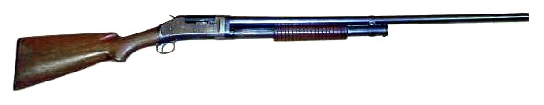

M1897泵動式霰彈槍

溫徹斯特M1897（英語：Winchester Model (M) 1897，俗稱：Model 97或M97）是一系列由著名的美國槍械設計師約翰·白朗寧所設計、美國溫徹斯特連發武器公司所生產的泵動式及外置擊錘式散彈槍，綽號戰壕清道夫。從1897年到1957年，這種散彈槍生產了超過100萬枝。該槍有許多不同的槍管長度和型號可以選擇，例如發射12鉛徑散彈或16鉛徑散彈，並且有堅固的槍身和可拆卸的附件。16鉛徑的標準槍管長度為711.2公釐（28英吋），而12鉛徑則配有762公釐（30英吋）的長槍管。特殊槍管長度可以縮短到508公釐（20英吋）或是伸延到914.4公釐（36英吋）。自從1897年時首次推出以後，它已被美國士兵、執法機關和獵人所採用。
- 溫徹斯特M1897是一枝由著名的美國槍械設計師約翰·白朗寧把溫徹斯特M1893改進設計出來的泵動式散彈槍。而溫徹斯特M1897和溫徹斯特M1893都是由約翰·白朗寧所設計的。溫徹斯特M1897是一枝沒有扳機切斷裝置的外置式擊錘型散彈槍，使它能夠快速連射。這意味著使用者只要在保持扣著扳機以下反覆不斷地拉動前護木，散彈槍就會在前護木和槍機都回到前端閉鎖的一瞬間發射。該槍本身被列為滑動式槍機泵動式散彈槍。這是第一枝真正成功地生產的泵動式散彈槍。由1893年開始生產直到溫徹斯特於1957年決定將其停產以前，總共生產超過1,000,000枝各種版本和各種長度的槍管。發射16鉛徑散彈的溫徹斯特M1897隻有一種標準長度是28英吋的槍管。發射12鉛徑散彈的溫徹斯特M1897主要配備30英吋標準長度槍管，也有特別的槍管長度選擇，諸如縮短至20英吋的短槍管，或是延長至36英吋的長槍管。隨著各種版本和槍管長度，溫徹斯特M1897具有兩種不同的膛室設計。一個是12鉛徑，而另一個是16鉛徑。可以使用的散彈彈殼長度是23⁄4英吋或是25⁄8英吋的型號。任何超過它們的散彈彈殼長度都不推薦使用。一般而言，溫徹斯特M1897的管式彈倉平均可以裝填5發散彈。另外如果包括1發裝填在膛室內的散彈的話，溫徹斯特M1897平均總共可以裝填6發散彈。不過，這些都要視乎不同版本去決定。當溫徹斯特M1897的槍機隨前護木向後拉動時，長滑動式槍機會開鎖並且從機匣伸出，在將前一發散彈彈殼從拋殼口拋出槍外的同時把外置式擊錘向後拉下。這就是該槍被列為滑動式槍機泵動式散彈槍的原因。
中國北方工業公司經過多番努力，成功仿製並且使得該散彈槍重現。其命名北方97幾乎完全是從溫徹斯特M1897所複製過來。北方97同時具有「戰壕散彈槍」和「防暴槍」這兩款生產版本，只是並無原來的表面處理和一些槍身以上的附帶功能。